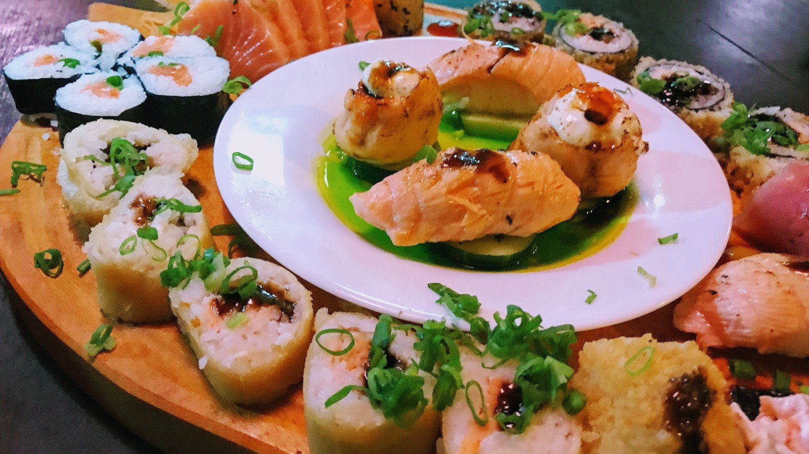
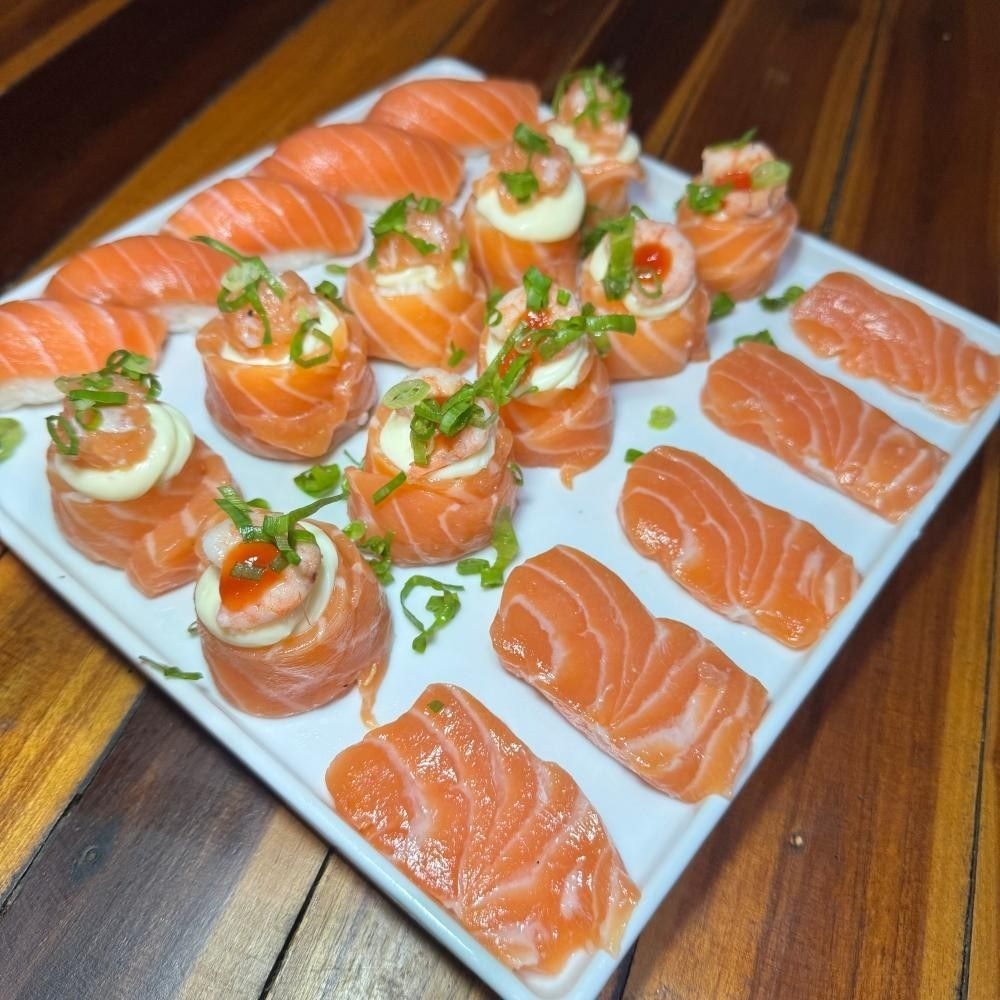
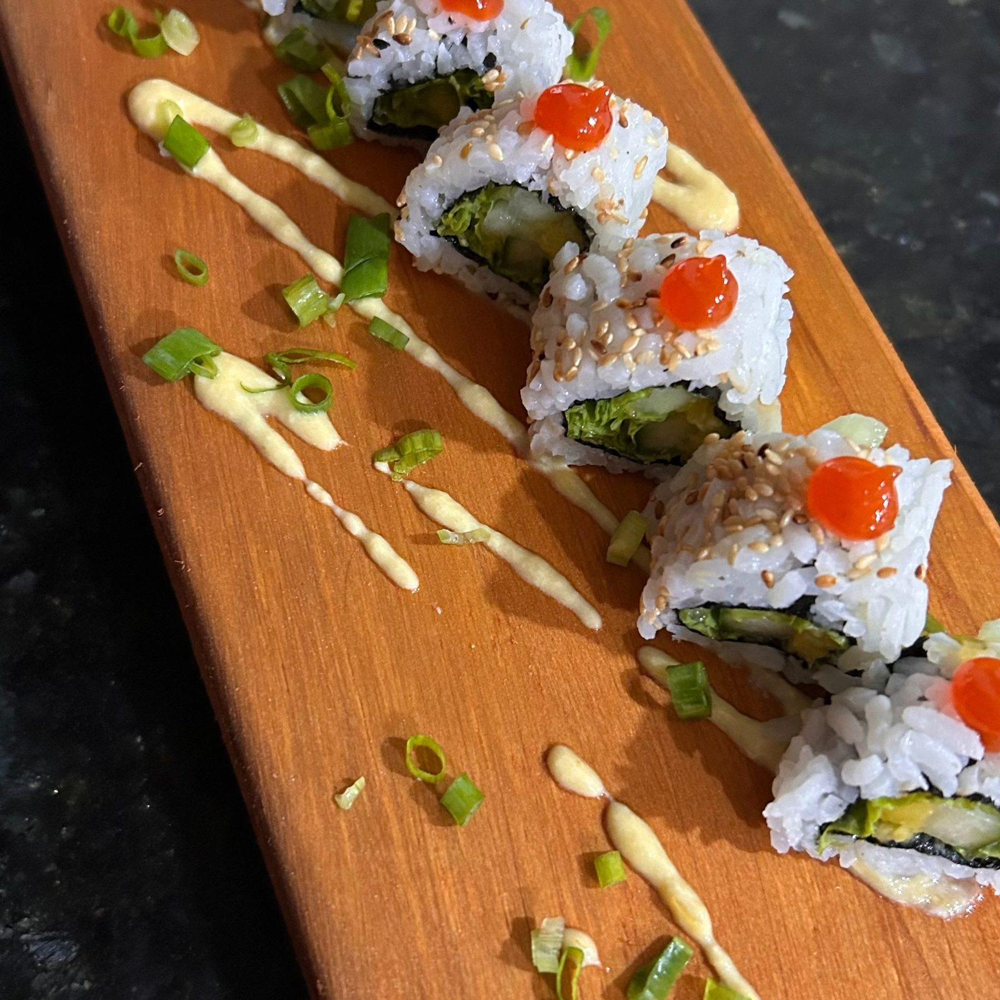
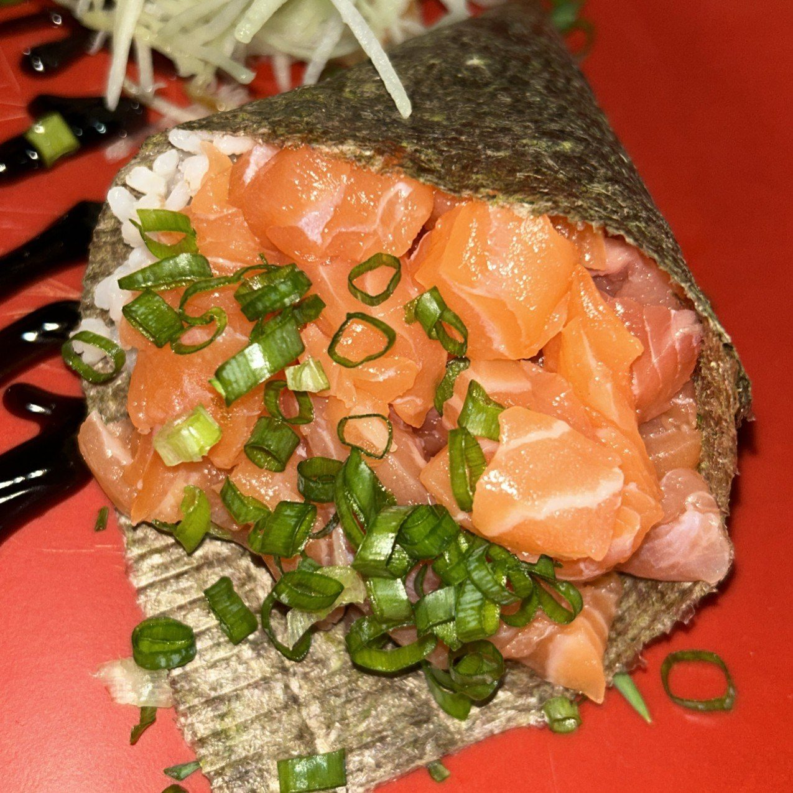
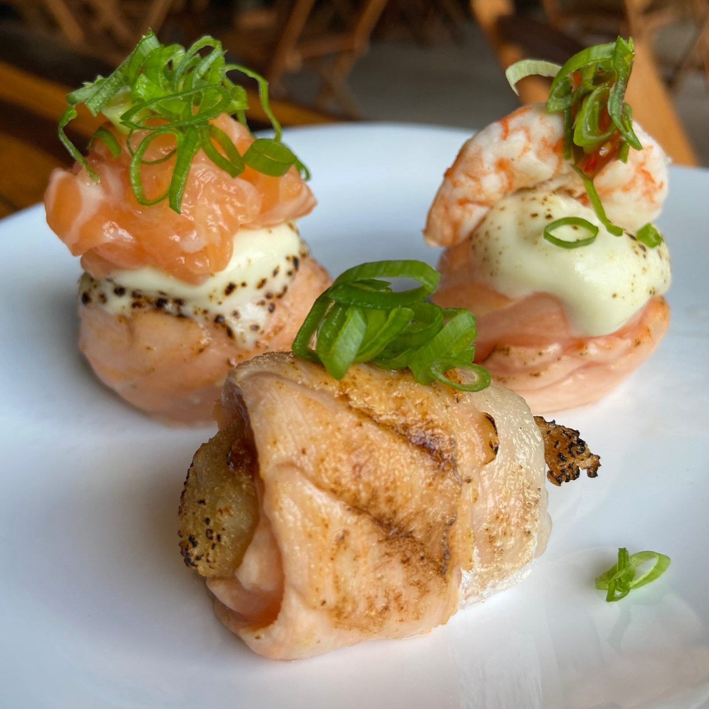
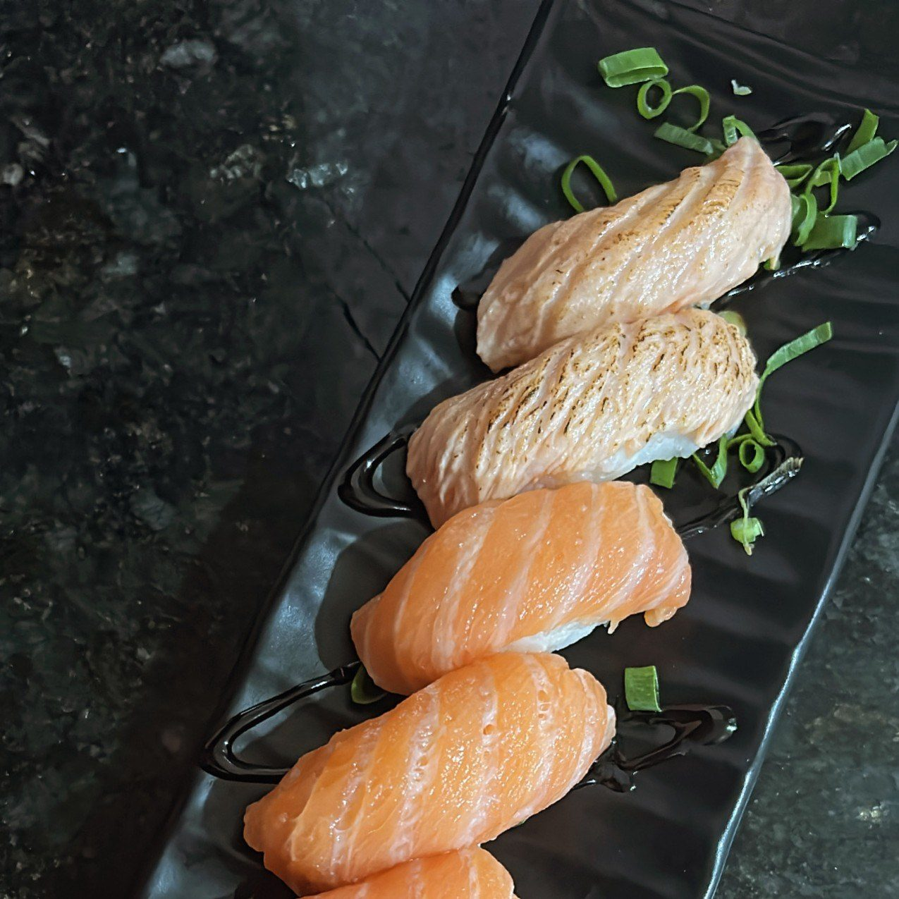
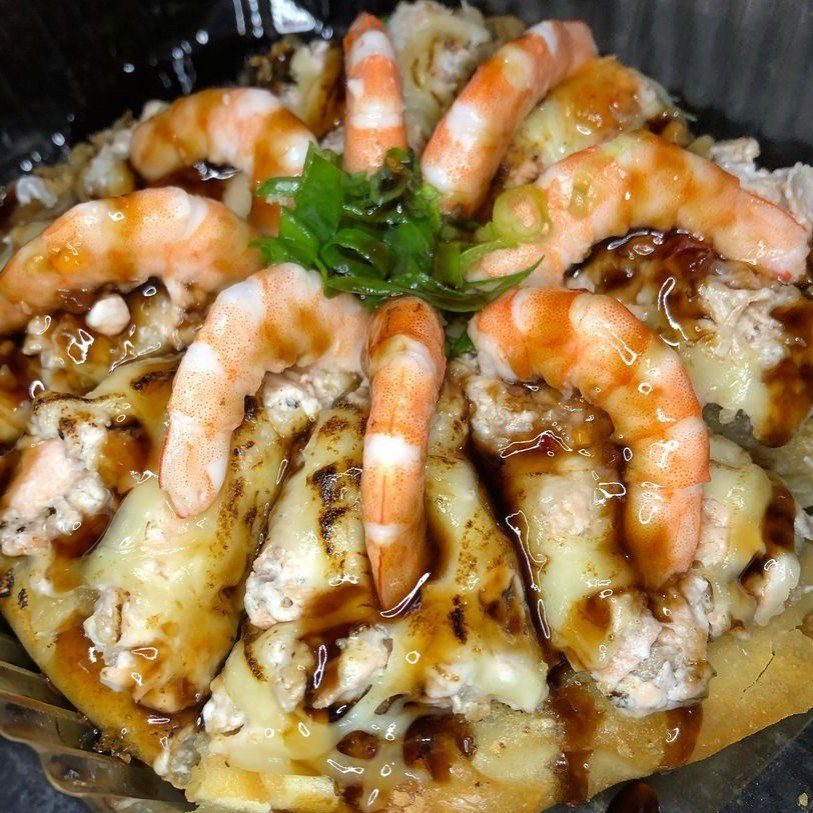
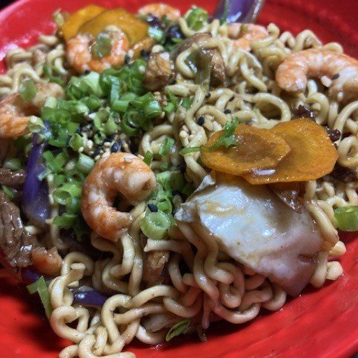
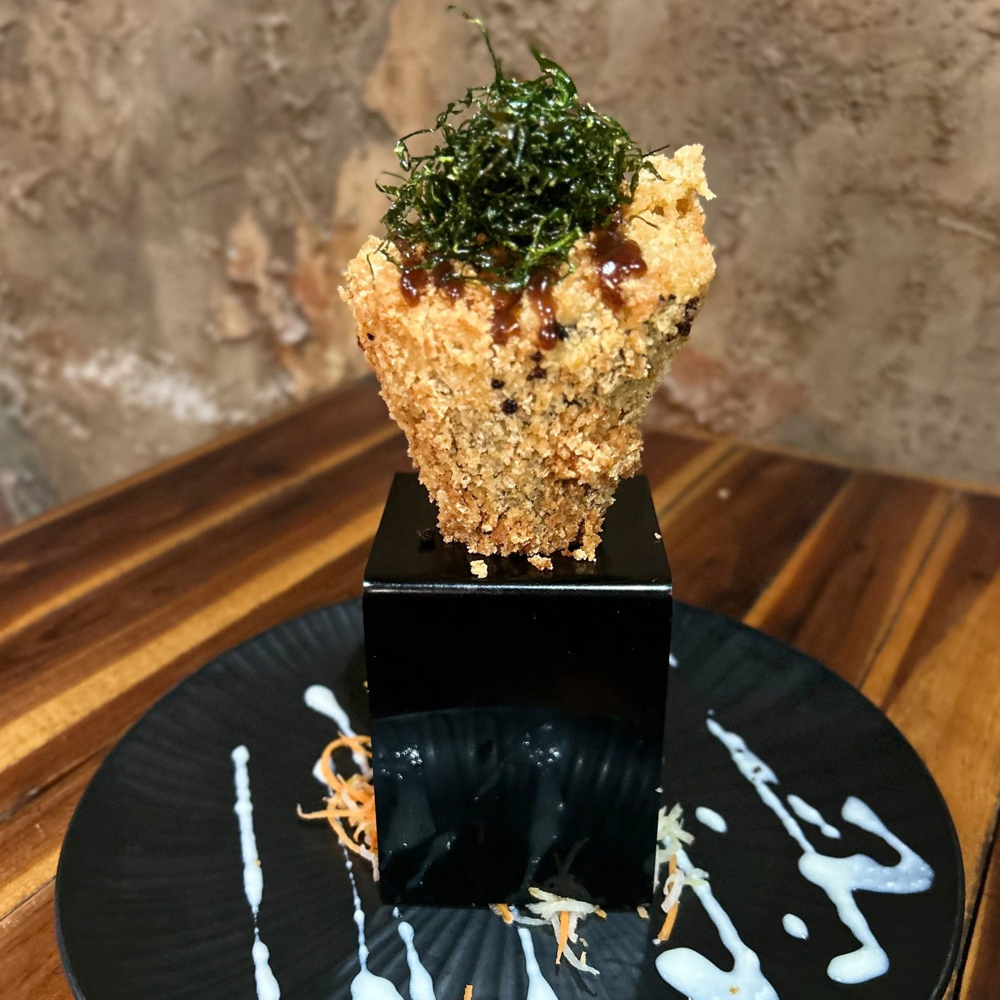

“Viveu seu primeiro encontro na Sumô e, hoje, carrega uma história ainda mais especial com a gente: foi aqui que ele também celebrou o seu casamento.”Instagram da Sumô, 20/09/2026
Culinária japonesa · Paripe, Subúrbio de Salvador
Há restaurantes. Há experiências. Há Sumô.
Sushi, temaki, yakissoba e vinho, do Chef Silvio Trindade. Delivery para 34 bairros do Subúrbio, retirada no balcão, salão e rodízio com reserva de terça a quinta.
- 4,4no Google · 212 avaliações
- 34bairros com delivery
- 18h–22hterça a domingo

A semana da Sumô
Cada noite tem o seu jeito de vir.
Terça a domingo, das 18h às 22h. De terça a quinta, o salão também recebe o rodízio de sushi e o rodízio de vinho, só com reserva.
- SegFechado—
- TerRodízio Sumô · Rodízio de vinhoDelivery · retirada · salão18h–22h
- QuaRodízio Sumô · Rodízio de vinhoDelivery · retirada · salão18h–22h
- QuiRodízio Sumô · Rodízio de vinhoDelivery · retirada · salão18h–22h
- SexSalão e cardápioDelivery · retirada18h–22h
- SábSalão e cardápioDelivery · retirada18h–22h
- DomSalão e cardápioDelivery · retirada18h–22h
Por onde começar
O cardápio, o pedido e a reserva, sem aviso de plataforma em teste.
Cardápio
Tudo, com busca
Combos, sushi, temaki, yakissoba, pratos quentes e vinhos, com o preço de cada um.
Abrir o cardápioDelivery e retiradaMonte a sacola
Toque em “+”, veja o total e mande o pedido pronto pelo WhatsApp, sem comissão de aplicativo.
Montar o pedidoRodízio SumôTer, qua e qui
R$ 110,00 por adulto, servido aos poucos na mesa. Reserva com 24 h de antecedência.
Ver as regrasRodízio de vinhoSeco ou suave
R$ 60,00 por pessoa, nas mesmas noites, também com marcação antecipada.
ConhecerO quadro dos combos
Capoeira, Judô, Karatê, Dorama, Samurai: cada combo tem nome de luta.
Numa casa chamada Sumô, os combos entram no quadro como lutadores. Toque em “+” para pôr o combo na sacola.
- 12 peçasCapoeira4 uramaki, 4 hossomaki, 4 nigiri e 1 yakissoba de 400 gR$ 55,00
- 18 peçasJudô4 uramaki, 4 hossomaki, 4 nigiri e 6 hot rollR$ 58,00
- 12 peçasKaratê4 uramaki, 4 hossomaki, 4 nigiri e 1 temakiR$ 60,00
- 18 peçasHotHot roll de salmão, de camarão e o Sumô, na massa de harumakiR$ 52,00
- 14 peçasThai4 uramaki, 4 hossomaki, 6 hot roll e 2 temakiR$ 90,00
- 20 peçasDoramaTudo maçaricado: Joy Villa, Joy Kyoto, sashimi e nigiriR$ 99,00
- 20 peçasSamuraiCru e tradicional: sashimi, Joy Villa, Joy salmão e nigiriR$ 150,00
Combo do Chef
Peças escolhidas só pelo Chef, de 10 a 60.
“Com combinações e sabores gourmet, peças cruas, fritas e maçaricadas.”
- 10peçasR$ 35,00
- 20peçasR$ 75,00
- 30peçasR$ 115,00
- 40peçasR$ 155,00
- 50peçasR$ 195,00
- 60peçasR$ 215,00
Combos e preços do cardápio digital da casa, lidos em 03/10/2026. Fotos do Combo do Chef são ilustrativas, como a casa avisa.
Rodízio Sumô · terça, quarta e quinta
Sushi e muito mais, servidos aos poucos na sua mesa.
“Nosso rodízio é exclusivo: os pratos são servidos gradativamente e diretamente em sua mesa, proporcionando uma experiência mais confortável e personalizada.”
- R$ 110adulto
- R$ 55criança de 6 a 10 anos
- Grátisaté 5 anos
- Só com reservaFeita com no mínimo 24 horas de antecedência. “Sem reserva, não realizamos atendimento.”
- Terça, quarta e quintaDas 18h às 22h. Não há rodízio em feriados e datas comemorativas nesses dias.
- Todo o cardápioO rodízio inclui todas as opções disponíveis no cardápio. Bebidas não estão inclusas.
- Servido à mesaOs pratos chegam aos poucos, direto na sua mesa.
- Sem limite de peçasExceto sashimi: até 10 unidades por pessoa.
- Nada para viagemO consumo é só durante o rodízio; não é permitido levar o que sobrou.
- Taxa de desperdícioR$ 30,00.
Reserve o rodízio
A marcação antecipada, sem arte de Instagram para decifrar.
Hoje as regras ficam numa arte do Instagram e a reserva é feita conversando. Aqui o cliente só vê terça, quarta e quinta, escolhe o horário, quantos adultos e crianças vêm, e a mensagem chega pronta no WhatsApp da Sumô.
- Só aparecem as noites de rodízio, das 18h às 22h.
- Crianças de 6 a 10 anos e até 5 anos vão separadas na mensagem.
- Rodízio de vinho e aniversário entram como ocasião.

Receitas do Chef
Chef Silvio Trindade, de Paripe para o cardápio.
“Uma criação do nosso Chef. Silvio Trindade.”Cardápio da Sumô, nas receitas do Tokoyaki e do Sakumaki
TokoyakiBolinho japonês com arroz, salmão, kani e cream cheese, empanado e frito. 4 unidades, R$ 25,00.
SakumakiMassa fina frita, com arroz e o recheio que o cliente escolhe. R$ 30,00 a unidade.
Quem já foi
“Lugar aconchegante, comida deliciosa”
4,4★★★★★
212 avaliações no Google
Ficha “Sumo - Temaki e Yakisoba”, consultada em 03/10/2026. Trechos citados pela própria ficha.Lugar aconchegante, comida deliciosa e ótimo atendimento.
Super acertou no cardápio, preços acessíveis e sabor maravilhoso.
Pizza Oriental muito boa.
Galeria
A varanda, o balcão e a cozinha
Monte seu pedido
Toque em “+”, a sacola soma e o pedido vai pronto.
Delivery ou retirada, direto no WhatsApp da Sumô, sem comissão de aplicativo. Alguns da casa para começar; o resto está no cardápio completo.

Hot roll Sumô · 12 un.Frito, com a receita da casaR$ 38,00

Uramaki de salmão · 8 un.Com molho e cebolinhaR$ 33,00

Temaki salmão completo140 g, com arrozR$ 32,00

Joy de salmão · 4 un.Também Villa e KyotoR$ 35,00

Nigiri de salmão maçaricado · 4 un.Salmão no maçaricoR$ 20,00

Pizza oriental salmão com camarãoBrotinho, 8 pedaçosR$ 45,00

Yakissoba frutos do mar · 400 gTambém 800 g e 1 kgR$ 45,00

Hot temakiFrito; sabor à escolhaR$ 40,00
Delivery no Subúrbio
34 bairros, de Paripe a Plataforma.
A taxa muda por bairro e é confirmada no fim do pedido, pelo WhatsApp. Retirada no balcão da Rua 21 de Abril, 25, em Paripe.
- Monte a sacolaToque em “+” nos itens do cardápio.
- Mande pelo WhatsAppA mensagem sai com os itens e o total estimado.
- Combine entrega ou retiradaA casa confirma a taxa do bairro e a forma de pagamento.
Alto de CoutosAlto da TerezinhaBarragemColinas de PeriperiConstituinteCocisaCoutosDentro de InemaEscadaFazenda CoutosFazenda Coutos 3Hospital do SubúrbioIlha de São JoãoIlha AmarelaInemaItacaranhaLobatoMirantes de PeriperiMorada da LagoaNova Brasília de ValériaPata PataParipePeriperiPlataformaPraia GrandeRio SenaSub EstaçãoSão João do CabritoSão ToméTubarãoVista AlegreValériaVila Naval
Bairros do cardápio digital da casa (03/10/2026). Pagamento em dinheiro, cartão de débito ou crédito e Pix.
Dúvidas frequentes
Antes de pedir
Qual é o horário?
Terça a domingo, das 18h às 22h. Segunda a casa fecha.
Entrega no meu bairro?
A Sumô entrega em 34 bairros do Subúrbio, como Paripe, Periperi, Coutos, Plataforma, Lobato, São Tomé e Valéria. A lista completa está na página de delivery.
Quanto custa a entrega?
A taxa varia por bairro. A casa confirma o valor no fim do pedido, pelo WhatsApp.
Posso retirar no balcão?
Sim, na Rua 21 de Abril, 25, em Paripe, próximo ao Detran. Na retirada, a embalagem custa R$ 3,00.
Como funciona o rodízio?
Terça, quarta e quinta, das 18h às 22h, só com reserva feita com no mínimo 24 horas de antecedência. R$ 110,00 por adulto, R$ 55,00 de 6 a 10 anos e grátis até 5 anos. Bebidas à parte.
Quais as formas de pagamento?
Dinheiro, cartão de débito e crédito e Pix, conforme o cardápio digital da casa.
Terça a domingo, das 18h às 22h
Monte o pedido ou marque o rodízio.
A mensagem chega pronta no WhatsApp da Sumô: delivery para 34 bairros, retirada em Paripe e rodízio de terça a quinta.